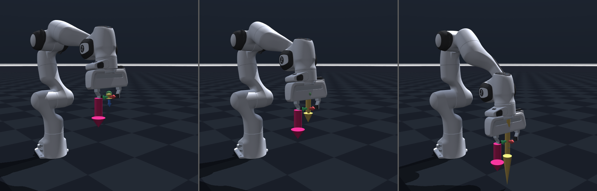
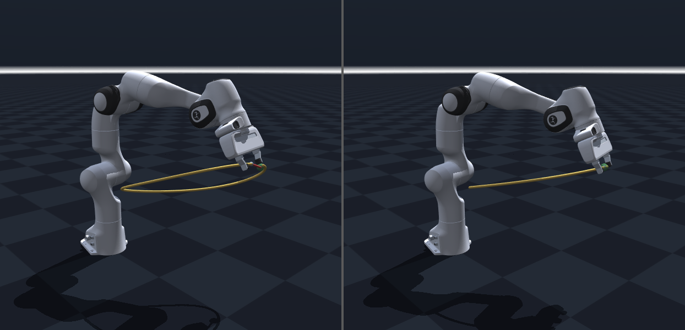
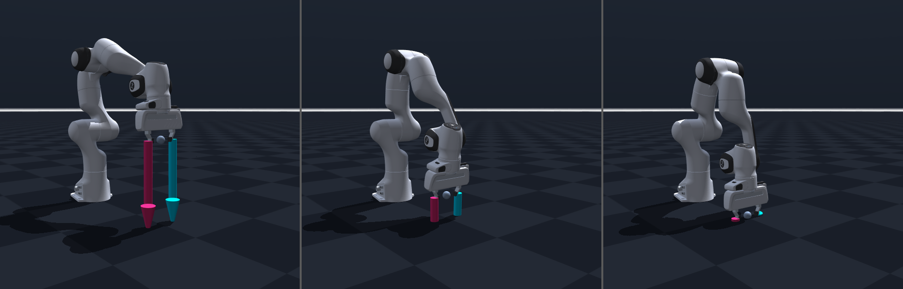
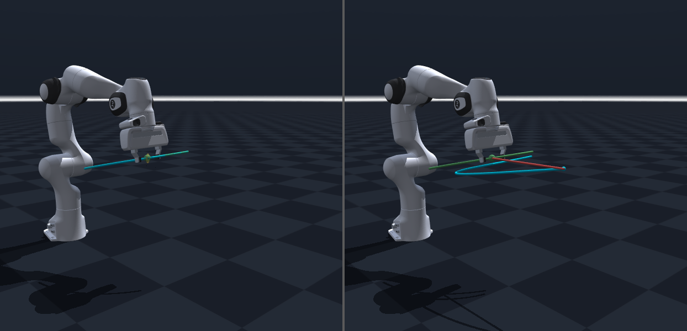
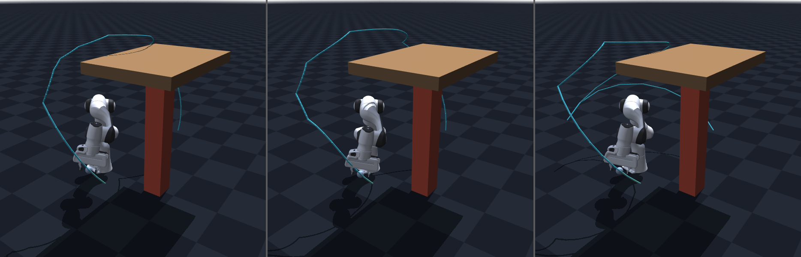
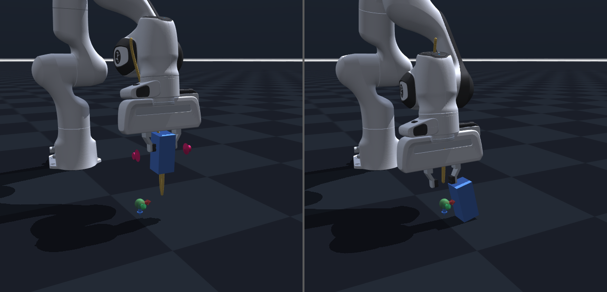

全部由 armctrl/demos/ 里的脚本生成，可复现。不需要装任何东西就能看。
N ≥ mg/(nμ) 给出，不是拍脑袋。F/K。按「运动学 → 规划 → 控制 → 估计 → 辨识」组织，每一层都能单独跑、单独验。
| 模块 | 内容 |
|---|---|
| core/ | TCP 正运动学与点雅可比、M(q)、Cq̇、g(q)、任务空间惯量 Λ、可操作度、条件数；SO(3) 对数映射与连续 lift、数值 IK（伪逆 / DLS / 自适应 DLS）、零空间投影 |
| planning/ | 五次多项式、七段 S 曲线（jerk 有界）、四元数 slerp、直线与圆弧插补；RRT-Connect + 捷径平滑 + TOPP-RA；执行途中在线重规划 |
| control/ | 笛卡尔阻抗（Λ 自适应临界阻尼 + 零空间刚度）、导纳、混合力位；计算力矩；Slotine-Li 与 RBF 自适应；线性 MPC；迭代学习控制；模态振动抑制；视觉伺服 |
| estimation/ | 广义动量观测器（无传感器外力估计与碰撞检测）；IMU 比力模型 + 9 维卡尔曼；ESKF 姿态解算（含偏航不可观分析） |
| identification/ | τ = Y(q,q̇,q̈)π 回归矩阵、SVD 基参数集、傅里叶激励轨迹条件数优化、WLS |






这是这个项目我最想讲的一部分。「跑通了」和「被验证过了」是两件事。
调参台每个读数旁边都有一个理论对照值，由解析式独立算出，不是把实测值抄一遍。 两条路径只共享物理前提，对不上就说明有一方错了。
所以有 tools/verification/：把实现逐条改坏，确认测试真的会红。
这类「空测试」从代码上完全看不出来，只有变异扫描能抓。实际抓到过的：
| 症状 | 真实例子 |
|---|---|
| 名字对、内容是空的 | 一条测试叫 takes_the_minimum_over_contacts，但夹具全场只有一个摩擦系数 ⇒ min 与 max 恒等，把实现改成 max 照样全绿 |
| 默认值撞上出厂值 | 工件出厂摩擦恰好 0.6，滑块默认值也是 0.6 ⇒「漏改一侧」这个 bug 在默认工况下毫无现象 |
| 读数量错了对象 | 「切换跳变」差分的是指令位置，而名义轨迹本来就在走 ⇒ 有个消不掉的地板，还顺手把另一个真 bug 一起藏住了 |
| 比值判据对共模误差是瞎的 | 只验「硬切换 vs 开过渡」的倍数关系，而地板在分子分母都存在，比值照样漂亮 |
在一份新 clone 里跑变异脚本，输出是漂亮的「杀死 2 / 存活 0」。 多看一眼失败原因——清一色是找不到模型文件。
测试确实红了，但不是被变异抓红的，是环境本来就坏的。 变异验证的逻辑是「改坏 → 测试红 → 记为被杀」，而「测试红」有两种原因， 第二种会让每一个变异体都「被杀」——报告越漂亮，越说明什么都没验证。
修法：变异前先跑一次未改动的测试，不绿就直接退出。 这个基线自检加上去的当天，就在 CI 里拦下了一次真事故。
讲义里每个实测数字都由测试从 Markdown 现场解析再逐格重跑。 起因是一次审核发现某节的四个数已经过期——它们是几轮之前手工跑一次贴上去的。 「跑一次贴上来」的数字，寿命只到下一次改代码为止。
CI 一共红过三次，每次都是真问题，而且都不是代码问题—— 都是「我的环境里恰好有、别人没有」：runner 没有 EGL 驱动、 子进程没继承模型路径、文档变异体要改不随仓库分发的讲义。
这三条在自己机器上重跑一万次也发现不了。
# CI 每次提交都做这四件事
✓ 环境自检 require_panda_xml() 打印模型路径，缺了就给安装指引
✓ 跑全量测试 723 项
✓ 变异抽检 把实现改坏，确认测试真的会红
✓ 工作区干净检查 变异脚本没留下未还原的改动12 个场景，每个都是「拖一个滑块 → 看物理量怎么变 → 对照理论值」。 画面在 MuJoCo 原生窗口，讲解与调参在浏览器。
git clone https://github.com/hrx2025lucky-lab/armctrl.git
cd armctrl
pip install -r requirements.txt
# Panda 模型来自第三方资产仓库（Apache-2.0），不随本仓库分发
git clone https://github.com/google-deepmind/mujoco_menagerie.git ~/mujoco_menagerie
./tuner.sh --list # 列出 12 个场景
./tuner.sh impedance # 浏览器打开 http://127.0.0.1:8770/| 场景 | 拖什么滑块，看什么现象 |
|---|---|
| impedance | 调刚度 K：稳态偏移精确等于 F/K；调阻尼 ζ 在恒力下读数一动不动——必须给动态激励才看得出阻尼 |
| tracking | 把轨迹频率调高：PD+重力补偿的误差涨得比计算力矩快得多 |
| adaptive | 跟踪误差收敛 ≠ 参数收敛，需要持续激励 (PE) 条件 |
| observer | 调 KI：检测延迟不是 1/KI，那是时间常数——两者差一倍 |
| grasp | 调摩擦系数与夹持力：越过摩擦锥就打滑，门槛由闭式给出 |
| servo | 柔性关节谐振、陷波滤波器与输入整形 |
其余：estimation · attitude · planning ·
replan · teaching · ilc
调参台用 show_left_ui=False, show_right_ui=False 启动，
两块看板都隐藏——按 Tab 调出左看板
（Watch / 物理 / 渲染），Shift+Tab
调出右看板（Profiler / Sensor）。
Watch 能实时盯住任意一个 MjData 字段，
比如 ncon（接触点个数）、qfrc_constraint（约束力矩）——
「地面到底帮忙扛了多少力」就是这么量出来的。
⚠️ 画面突然被红色半透明盒子罩住不是报错，是误按了 I（惯量盒），再按一次就恢复。 完整的看板说明、快捷键全表与各种启动命令见仓库里的 《MuJoCo 窗口与启动命令》。
MuJoCo 是仿真，不是真机。本项目全部结论至多到「同模型自洽」这一档。
| 没有真机验证 | 没有实物平台，摩擦、间隙、柔性、时延都是模型里的，不是量出来的 |
| 动态避障没有感知层 | 假设障碍物未来轨迹已知。真实系统里预测误差才是主要失效源 |
| 「轨迹精度补偿」是迭代学习控制 | 同一轨迹反复跑、逐次消重复性误差，不是工业语境里的几何标定补偿——两者同名，容易混 |
| 仿真自身的局限已写成测试 | 例如实测发现摩擦锥余量 0.55 就开始漏，也就是「余量 < 1 所以夹得住」在本仿真里不成立。与其不提，不如把它钉成测试 |